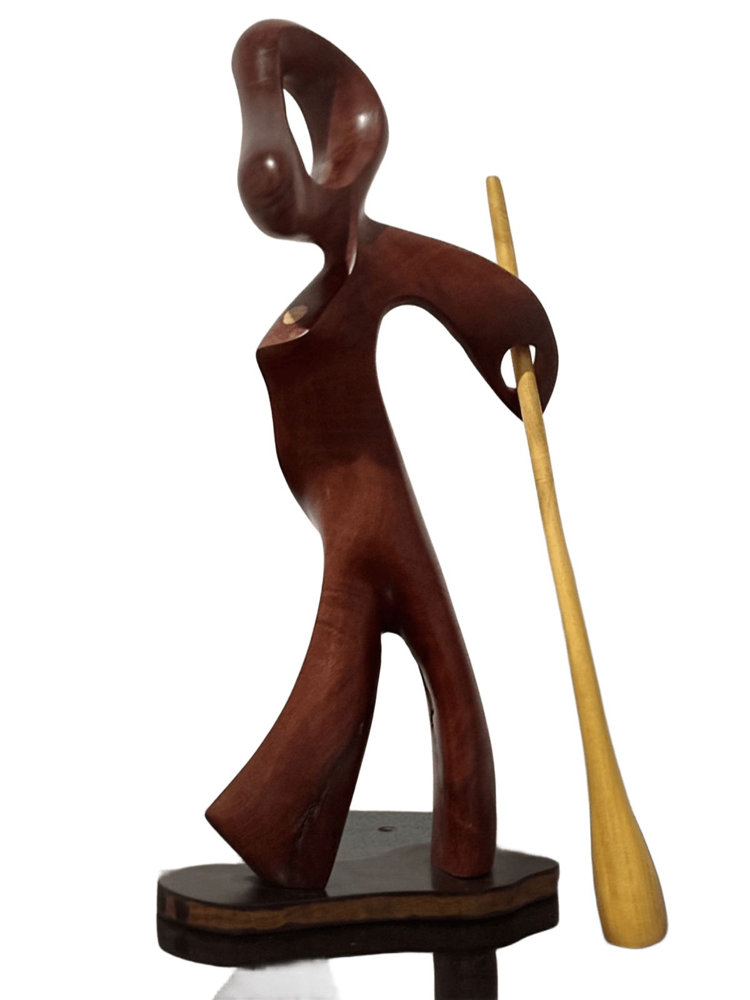

Lord
Uma obra de Nuna
Ver no InstagramA escultura "Lord" é um testemunho fascinante da capacidade de transformar o efémero em eterno, o descartado em arte.
A figura humanóide abstrata que emerge da madeira possui curvas fluidas e um senso inegável de movimento. É uma dança silenciosa que celebra a forma e a vitalidade, mesmo partindo de um estado de aparente declínio. A peça é uma prova da maestria e paciência do artista, demonstrando o quão valioso pode ser o aproveitamento de materiais que muitos considerariam perdidos.
Ficha Técnica
- Materiais: Madeira de Jaqueira, Pequiá e Cajacatinga em decomposição.
- Dimensões: Aproximadamente 50 cm de altura.
- Estrutura: Figura humanóide abstrata com haste amarelada vibrante.
- Destaque: Parte superior vazada que adiciona leveza e mistério.
- Versatilidade: Ideal para diversos ambientes.